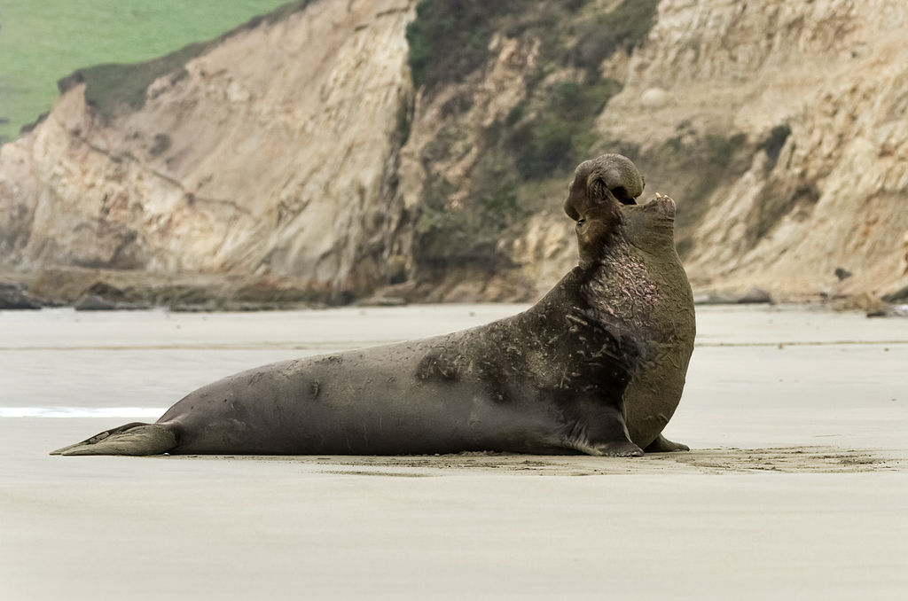
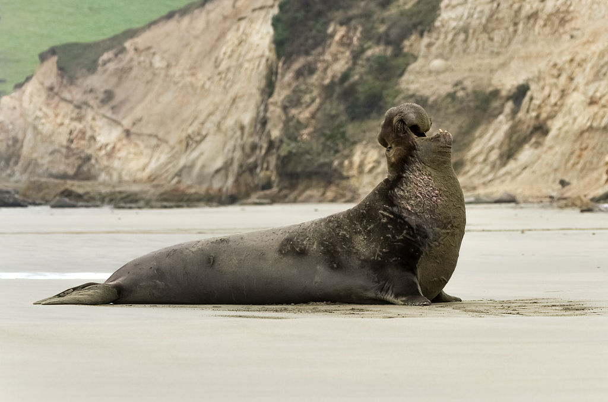

Conheça essas maravilhosas criaturas!
Mergulhe e descubra o encanto destas maravilhas aquáticas
Explorando o Mundo das Focas

Segure suas nadadeiras, porque estamos prestes a embarcar em uma jornada na vida das focas! Estes adoráveis mamíferos aquáticos são verdadeiras estrelas do oceano, e eles têm algumas histórias legais para contar. Do frio do Ártico às praias ensolaradas, as focas dominaram a arte de aproveitando a vida acima e abaixo das ondas. Vamos mergulhar no águas profundas do conhecimento do selo!
Estilo e Movimentos

As focas são conhecidas por suas habilidades de natação elegantes, muitas vezes rivalizando os de nadadores olímpicos de primeira linha. Suas nadadeiras, semelhantes a atletas bem treinados, guiando-os sem esforço através da água com um graça hipnotizante.
Um aspecto fascinante é o seu isolamento natural: camadas de blubber. Este mecanismo de calor embutido permite que eles prosperem em vários temperatura da água. Imagine essas criaturas deslizando sob o superfície da água – uma dança perfeita com correntes, sua aerodinâmica corpos em movimento com fluidez e elegância. É uma prova de a adaptabilidade da natureza e a beleza inspiradora da vida aquática.
Focas Hangouts

Adivinha onde você pode encontrar essas criaturas fantásticas? Do polar gelado zonas de mergulho para os pontos de frio ensolarados da costa, as focas sabem como colher suas almofadas. Eles adoram relaxar em costões rochosos, exibindo seus pelo beijado pelo sol, e ocasionalmente fazendo o cha-cha-slide para o Água.
Conheça a tripulação das Focas

 


Conheça os VIPs (Pinípedes Muito Importantes)! Temos o selo do porto, O Foca Cinzento, o Elefante Marinho (sim, aquele com o hilário Schnoz), e a feroz foca-leopardo. É como um elenco repleto de estrelas de o oceano! Cada um tem suas próprias peculiaridades e habilidades, tornando-as verdadeiras ícones do tapete vermelho subaquático.
Fatos legais sobre focas

Mergulhe no mundo das focas, aquelas encantadoras criaturas marinhas com um talento para o extraordinário. De prender a respiração como campeões subaquáticos para usar seus bigodes para GPS subaquático, estes As maravilhas marinhas são bastante espetaculares.
As focas embalam a arte de prender a respiração, tornando qualquer mergulhador profissional verde de inveja. E aqueles bigodes? Eles são como os próprios da natureza GPS, guiando esses exploradores subaquáticos através de suas águas aquáticas Aventuras.
Para um mergulho mais profundo na grandiosidade das focas, visite nationalgeographicbrasil